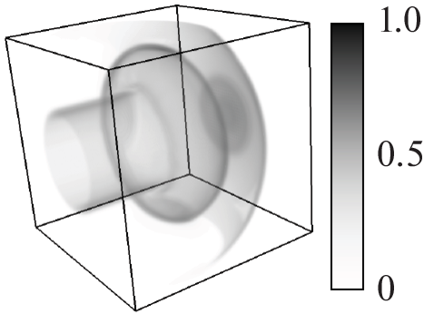
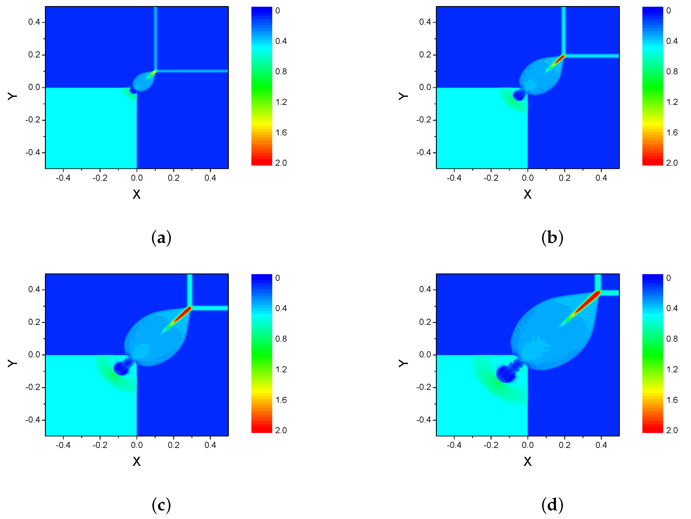
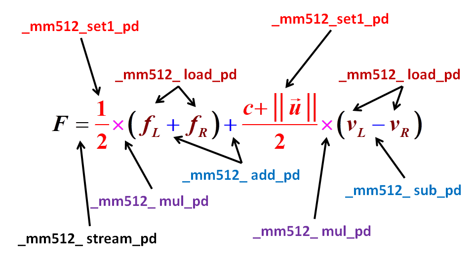
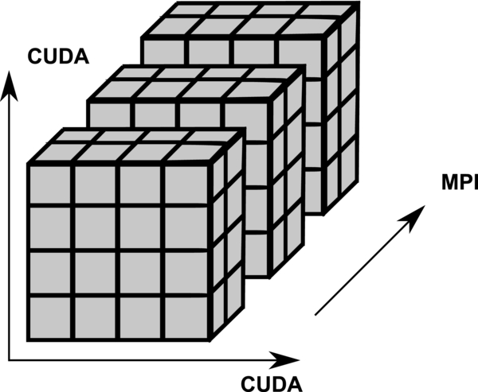
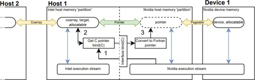
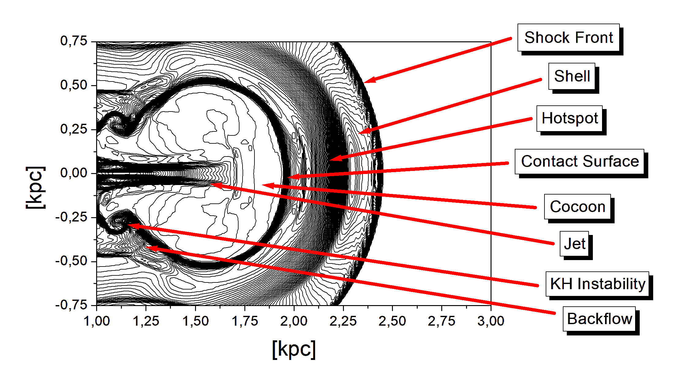
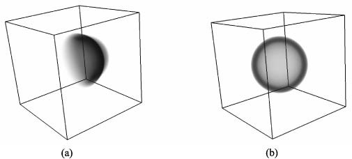
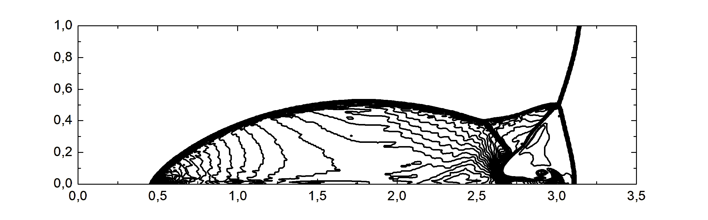

Hello! My name is
Igor Kulikov
and i'm leading researcher of Department of Supercomputer Modeling at Institute of Computational Mathematics and Mathematical Geophysics Siberian Branch of the Russian Academy of Sciences and associate professor of Department of Computing Systems at Novosibirsk State University.
I hold a Doctor of Science in applied mathematics. My research interests include numerical modeling in astrophysics, high-performance computing, parallel numerical methods, and numerical solvers for hyperbolic equations.
|
AMR  |
Coarray Fortran  |
AVX-512 Code  |
GPUPEGAS  |
CUDA + Coarray Fortran + OpenMP  |
|
Relativistic Solver  |
Star Formation 
|
SNIa Modeling  |
PPML Solver  |
AstroPhi Code 
|
Education
Doctor of Science in Applied Mathematics, 2017 (ICM&MG SB RAS, Novosibirsk)
PhD in Applied Mathematics, 2010 (Sobolev Institute of Mathematics SB RAS, Novosibirsk)
Master Diploma in Applied Mathematics and Informatics with Honours, 2007 (NSTU, Novosibirsk)
Bachelor Diploma in Applied Mathematics and Informatics with Honours, 2005 (NSTU, Novosibirsk)
Skills
Fundamentals: Computational Methods, Parallel Computing, System Programming, Floyd-Hoare Logic
Programming Languages: C and Fortran (development from scratch), C++ (for code support)
Technologies: MPI, Coarray Fortran, CUDA, OpenMP, POSIX Threads, WinAPI, AVX-512
Methodologies: Scrum/Agile, Co-Design/SDCL, Hero Code, Technology Evangelist, Anti-Crisis Developer
Soft Skills: Analytical Reasoning, Problem Solving, Public Speaking, Mentoring, Leadership
Contacts
 kulikov
kulikov[at]ssd[dot]sscc[dot]ru (work e-mail)
 kulikov.igor.1984
kulikov.igor.1984[at]gmail[dot]com (private e-mail)

[at]IgorMKulikov (telegram)
Profiles
 0000-0002-1959-780X (ORCID profile)
0000-0002-1959-780X (ORCID profile)
 IgorKulikov (GitHub profile)
IgorKulikov (GitHub profile)

[at]igorkulikov (GitFlic profile)
35107368800 (Scopus profile)
 MHD-PP Workshop Vice-Chair (Site)
MHD-PP Workshop Vice-Chair (Site)
👤 Curriculum Vitae (pdf)